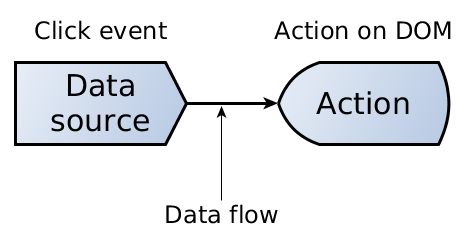
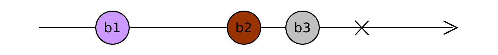

Reactive Programming: Dealing with Asynchronicity
Ricardo Sanz
sanzante / tunic
drupalmountaincamp.ch
Ricardo Sanz
Drupal Developer & DevOps
drupal.org/u/tunic
sanzante @ Twitter
Walktrough
- Intro.
- Approaches to deal with asynchronicity.
- Reactive Programming.
- Plumbing!
- Observables.
- Operators.
- Code examples.
- Final notes.
Introduction
Reactive Programming
- A way to manage asynchronicity.
- This is NOT a talk about React.
- Based on the ReactiveX library.
- Usable in many languages in addition to JavaScript: PHP, Java, Scala, C#, C++, Pyhton and others.
Advantages
- It greatly simplifies asynchronous working.
- Very easy to combine and manage asynchronous data sources.
- Generates a shorter, simpler and more intuitive code*.
- Maintainability.
Asynchronicity
- Unpredictable events over time.
- The browser environment is asynchronous.
- AJAX.
- User interaction (mouse, keyboard, etc).
- Timers or animations
- WebSockets.
- Workers.
Dealing with asynchronicity
Callbacks
- Simple reaction to an event.
-
Function call (listeners).
jQuery('#grip').click(function() { jQuery('#panel').slideUp(); }); - Coding complex reactions is hard.
- Callback hell.
Callback hell
var doc;
memStorage.get(docId, response => {
doc = memResponse;
if (!memResponse) {
localStorage.get(docId, localResponse => {
doc = localResponse;
if (!localResponse) {
serverStorage.get(docId, serverResponse => {
doc = serverResponse;
if (!serverResponse) {
// Error.
}
});
}
});
});
Promises
- Objects that wrap asynchronous operations and react when there is a result.
- They're almost callbacks turned into objects.
- They greatly improve flow and error management.
- Added to ES2015 (ECMAScript 6).
Promises
- They are resolved only once: they return a single value.
- Following the execution flow may not be trivial.
- They are not lazy.
- They are not cancelables.
- Promise hell.
Reactive programming
- It brings functional programming capabilities to imperative programming.
- Programming using asynchronous data streams.
- Declaration of data pipes that process and transform the data that crosses them.
- Declaration of reactions to changes.
- Similar example: how Angular, React and Vue.js update rendering on data change.
Plumbing!

Plumbing!
- Is about creating data pipes.
- The pipe that certain data crosses.
- The pipe transforms the data
- When data reaches the end of the pipe a reaction is triggered.
Simple pipe
Example: Click event listener.
jQuery('#grip').click(function() {
jQuery('#panel').slideUp();
});

Complex pipe
Example: From a click to an AJAX request, and then to a instantiated object list.
Breath pause

Observables and Operators
Observables/Streams
- Observables from Observer pattern.
- Data streams.
- They emmit data until they finish or an error is triggered.
Marble diagrams
- Simple way to show data flow over time.
- Data flow that emits 4 elements and then finishes.
- Data flow that emits 3 elements and then emits an error.
Operators
- They allow to chain streams.
- They allow to transform the stream data.
- They allow to modulate streams.
- They can create streams.
- They can combine streams
Operators
Filter operator, filters values that don't match the condition.

Operators
Map operator, transforms stream data.

Code examples
Ej: Chronometre
- Manual chronometre that accumulates time.
- A button to enable it.
- Another button to pause/continue.
var clockValue = 0;
var clockOn = true;
const btS$ = fromEvent(buttonStart, 'click');
const btP$ = fromEvent(buttonPause, 'click');
const clock$ = interval(1000);
btP$.subscribe(() => clockOn = !clockOn);
clock$.subscribe(x => output1.innerHTML = x);
clock$
.pipe(
combineLatest(btS$, v => v),
filter(() => clockOn))
.subscribe(() => output2.innerHTML = clockValue++);
Event diagram
clock$ ---1---2---3---4---5---6---7---8---9------>
do
---1---2---3---4---5---6---7---8---9------>
btS$ --------x--------------------------------->
combineLatest
--------2--3---4---5---6---7---8---9------>
filter (clockOn)
--------2--3---4---6-----------8---9------>
btP$ ---------------------x--------x----------->
clockV 000000001112222333344444444444455556666--->
clockOn 111111111111111111111000000000011111111--->
Decathlon
"Button killerism"
- Detect clicks in a row (double, triple, etc).
- Time is counted from the first click. https://codepen.io/sanzante/pen/KJOydx
var button = document.querySelector('.this');
var clickStream = fromEvent(button, 'click');
var text = document.querySelector('h2');
var multiClickStream = clickStream.pipe(
buffer(interval(660)),
map(list => list.length),
filter(x => x >= 2));
multiClickStream.subscribe(numclicks => {
text.appendChild(createItem(1));
});
multiClickStream.pipe(delay(3000))
.subscribe(suggestion => {
text.removeChild(h2elem.firstChild)
});
Request URL and instantiate objects
fromEvent(button, 'click')
.pipe(
map(() => 'https://example.com/api/classification'),
flatMap(url => http.get(url)),
map(items => items.map(new MyItem(item))))
.subscribe(instances => this.list = instances);
Request URL and instantiate objects
Auto refresh
fromEvent(button, 'click')
.pipe(
merge(interval(60000)),
map(() => 'https://example.com/api/classification'),
flatMap(url => http.get(url)),
map(items => items.map(new MyItem(item))))
.subscribe(instances => this.list = instances);
Request URL and instantiate objects
Optional auto refresh
interval(60000)
.pipe(
filter(() => this.autorefresh),
merge(fromEvent(button, 'click')),
map(() => 'https://example.com/api/classification',
flatMap(url => http.get(url)),
map(items => items.map(new MyItem(item)))))
.subscribe(instances => this.list = instances);
Request URL and instantiate objects
Optional auto refresh and error management.
interval(60000)
.pipe(
filter(() => this.autorefresh),
merge(fromEvent(button, 'click')),
map(() => 'https://example.com/api/classification'),
flatMap(url => http.get(url)),
map(items => items.map(new MyItem(item))))
.catch(err => of(this.list))
.subscribe(instances => this.list = instances);
Final notes
Why Reactive Programming
- You can express from simple reactions to extremely complex reactions to change.
- No more hells.
- Observables resolve as many times as needed.
- Execution flow is intuitive *.
- It's lazy.
- It's cancellable.
When to use Reactive Programming?
- With many ashynchonous data sources.
- Complex interactions.
- Complex interdependency.
- To avoid internal state to manage asynchronous events.
WorldArchery App

Observables notes
- They are not EventEmitter.
- Can be asyncronous or synchronous.
- Can be cold o hot.
- Can be multicast o unicast.
- Can share or not the data source with their subscriptors.
Why to adopt?
Because others have already done it.

Why to adopt?
- It can express very complex models.
- It handles any data source.
- Observables: proposed for standard, currently in stage 1.
- Less code, improved maintanibility.
- Available in many languages.
- Asynchronicity.
Links
- The introduction to Reactive Programming you've been missing: https://gist.github.com/staltz/868e7e9bc2a7b8c1f754
- Interactive marble diagrams: http://rxmarbles.com/
- Rx Visualizer: https://rxviz.com/
- ReactiveX: http://reactivex.io/
- Ben Lesh: https://medium.com/@benlesh/
Questions?
Thanks!
We are hiring!